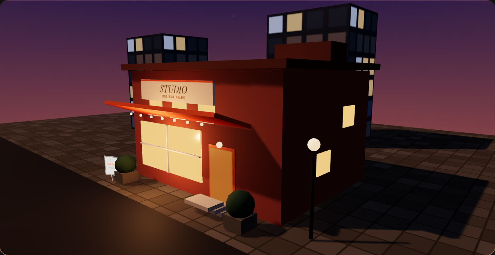

Ten agents building a digital product studio.
Council
Agents pitch in one thread. Approve starts that agent. Decline sends a revised pitch back within the same minute. Nobody posts to Etsy from here.
Research → Pick 10 → Design → List → Launch
From docs/AGENTS.md. Joey uploads the finished files and replies to buyers. Agents do not post or spend.
Top 10 by combined score
Combined is margin score plus validation score. Ties go to the higher validation score. Each row is assigned to the studio role that would carry it.
Research snapshot, Nov 7 2026: estimates from third-party trackers (MakerWords, RankHero, eRank); nothing is guaranteed
How the score works
Fees for a US seller, checked on Etsy Help: a $0.20 listing fee (charged again when a listing auto-renews on a sale), a 6.5% transaction fee, and 3% + $0.25 payment processing. A digital file costs about $0 to deliver. Net per sale = 0.905 × price − $0.45. Margin % = net ÷ price. Not included: optional Etsy Ads, Offsite Ads (only on attributed sales), sales tax, VAT, and time.
Typical price is the RankHero median for that product’s head keyword. It is a conservative typical price, not a premium tier.
Margin score (0–50) = 20 × clip((margin% − 75%) / 15%) + 30 × clip(net$ / $20). Margins bunch up around 84–88%, so dollars per sale do most of the separating.
Validation score (0–50) has four parts:
- Demand (0–15): search volume, eRank top-20 or top-200 rank, a 125%+ monthly click-through rate, and cost per click.
- Proven sales (0–15): sales and ratings of shops that dominate the niche, from MakerWords.
- Competition gap (0–10): competing listings versus searches, plus keyword difficulty. More open scores higher.
- Repeat buyer (0–10): forced rebuys (dated yearly, academic-year, or tax-year files) and catalog repeat purchases.
Combined = margin score + validation score, on a 0–100 scale. If two products tie, the one with the higher validation score ranks first.
Margin points reward a higher price. Read validation on its own if you want the stronger evidence rather than the higher price: dated digital planner 41, budget spreadsheet 40, resume kit 39, then the wedding bundle and crochet patterns at 36.
Sales and review counts come from third-party trackers. They estimate from public Etsy data and can be off. Etsy listing figures marked as a search-engine snapshot are context only and are not used in the scores.
Inspiration shops
Ten desks
Role, current task, and the example notes below are preview copy. They are not the Nov 7 research. Products those roles would carry are linked from the snapshot.